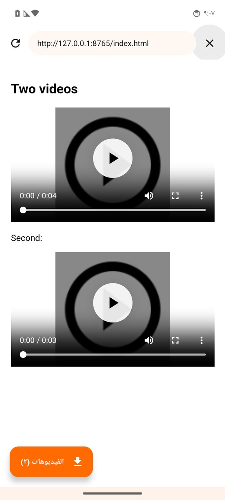
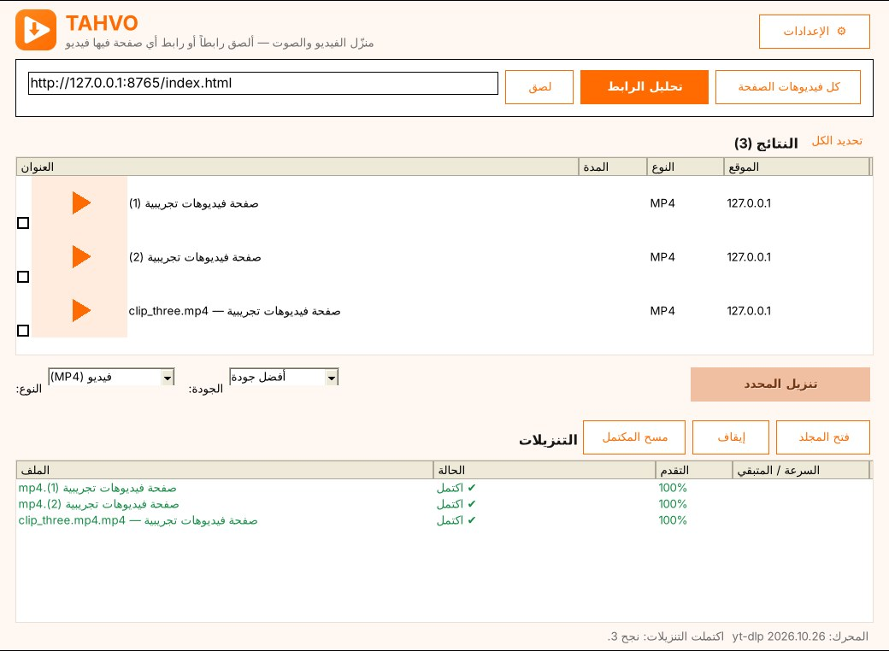

ألصق رابط الفيديو، أو افتح أي صفحة واختر منها الفيديوهات التي تريدها، وحدّد الجودة أو الصوت فقط. يعمل مع آلاف المواقع.
مجاني بالكامل · بلا إعلانات · عربي وإنجليزي
كل ما تحتاجه لحفظ الفيديو والصوت على جهازك.
انسخ رابط الفيديو من أي تطبيق، والصقه، واختر الجودة.
افتح أي صفحة من داخل التطبيق، فيكتشف الفيديوهات فيها لتختار ما تنزّله.
من صفحة فيها عدة فيديوهات أو قائمة تشغيل: حدّد بعضها أو كلها.
احفظ الصوت بصيغة MP3 للمحاضرات والأناشيد والبودكاست.
أفضل جودة أو 1080p أو 720p أو أقل لتوفير المساحة والباقة.
محرك التنزيل يتحدّث باستمرار ليبقى متوافقاً مع تغييرات المواقع.
لصفحات فيها أكثر من فيديو، أو مواقع لا يكفي فيها الرابط.


نفس الفكرة على الكمبيوتر.
أحدث إصدار، مجاناً.
ملف TAHVO.apk · للهواتف الحديثة (64-bit) بنظام Android 7 فأحدث. افتح الملف بعد تنزيله، ووافق على «السماح من هذا المصدر» إن طلب الهاتف ذلك.
تنزيل TAHVO.apkملف Setup_TAHVO.exe · Windows 10 و 11. يُثبَّت لحسابك فقط بلا صلاحيات المدير. عند أول تشغيل يجهّز البرنامج مكوّناً إضافياً (حوالي 40 ميغابايت) تحتاجه بعض المواقع.
تنزيل Setup_TAHVO.exeنعم، مجاني بالكامل وبلا إعلانات أو اشتراكات.
متجر Google لا يقبل تطبيقات تنزيل الفيديو من بعض المنصات، لذلك يُوزَّع TAHVO من هذه الصفحة مباشرة.
على ويندوز: من «الإعدادات» اختر متصفحاً سجّلت فيه الدخول إلى ذلك الموقع. يقرأ البرنامج بيانات الدخول من جهازك فقط ولا يرسلها لأي جهة.
يعمل مع آلاف المواقع، لكن المحتوى المحمي أو المشفّر (مثل منصات الأفلام المدفوعة) لا يمكن تنزيله. نزّل ما تملك حق حفظه أو للاستخدام الشخصي.
راسلني على tahamnly2024@gmail.com.